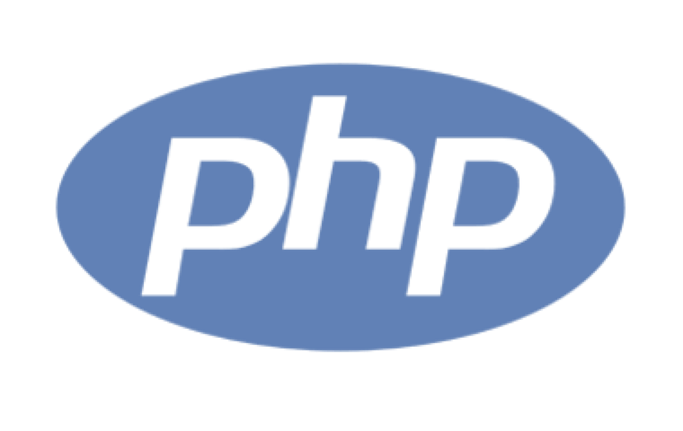

O que é JavaScript?

Javascript é uma linguagem de programação de alto nível criada, a princípio, para ser executada e manipular comportamentos de páginas web.Javascript... Leia mais sobre...
Veja a lista de posts do meu blog:
O que é JavaScript?
Javascript é uma linguagem de programação de alto nível criada, a princípio, para ser executada e manipular comportamentos de páginas web.Javascript... Leia mais sobre...
PHP é a melhor linguagem para começar?
Essa é uma pergunta recorrente para os iniciantes no mundo do desenvolvimento web. Por PHP ser uma linguagem muito popular, muitos iniciantes pensam em começar a estudar por ela mas,
Leia mais...Python

Não há dúvidas que Python é a melhor linguagem para se trabalhar com Ciencia de Dados, pois existem dezenas de bibliotecas preparadas para estatistica e machine learning criadas com a linguagem, ...
Leia mais...Linguagens mais populares
Veja o que os desenvolvedores estão dizendo:
Essa é a minha linguagem preferida, consigo fazer tudo com elaElon Musk, sobre Javascript
O Windows foi criado inicialmente usando PHPBill Gates, sobre PHP
Adoro Python, mas as Najas são mais bonitasRichard Rasmussen, sobre Python
Se você quiser, entre em contato pelo formulário abaixo: